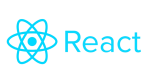

<main>
   <section class="items-container">
        <header class="header-title">
            <h1><span class="circle-left"></span>Minha Experiência</h1>
        </header>
        <span class="line-left"></span>
        <span class="line-bottom"></span>

        <section class="experience">
            <h2><span class="circle-left"></span>Trainee em Desenvolvimento de Software na Simeon</h2>
            <div class="work-time">2024/04 -  Atual <span class="work-time">Híbrido</span></div>

            <p>
                A Simeon é uma empresa de tecnologia fundada em 2002, desenvolvedora do software EPA (Estratégia para Ação), um sistema completo de gestão da qualidade para empresas, com foco em hospitais e organizações da área da saúde. O software é uma solução web construída com Laravel e PHP, oferecendo uma abordagem integrada para otimizar a gestão de qualidade nessas instituições.
            </p>

            <p>
                Na Simeon, atuo como trainee em desenvolvimento de software, e atualmente estou refatorando a base de conhecimento do sistema implementando Angular. Também atuo no desenvolvimento de protótipos de melhorias e novas funcionalidades usando Figma.
            </p>


            <div class="technologies">
                <h3>Tecnologias</h3>
                <div>
                    
                    
                    
                    
                    
                </div>
            </div>
        </section>

        <section class="experience">
            <h2><span class="circle-left"></span>Desenvolvedor Web na Level5</h2>
            <div class="work-time">2024/03 -  Atual <span class="work-time">Remoto</span></div>

            <p>
                A Level 5 é uma empresa júnior de tecnologia considerada a maior EJ de tecnologia do Estado de Goiás, sem fins lucrativos, fundada por alunos do Instituto de Informática da UFG, ela tem como objetivo proporcionar um ambiente de desenvolvimento para seus participantes por meio de uma vivência empresarial.
            </p>

            <p>
                Na Level5, atuo como membro da equipe de projetos, desenvolvendo aplicações web com diferentes tecnologias conforme a necessidade de cada projeto. Também sou responsável pelo design e prototipagem dessas aplicações, utilizando Figma com foco na Experiência do Usuário (UX).
            </p>
            <div class="technologies">
                <h3>Tecnologias</h3>
                <div>
                    
                    
                    

                    
                    
                </div>
            </div>
        </section>
   </section>
</main>
